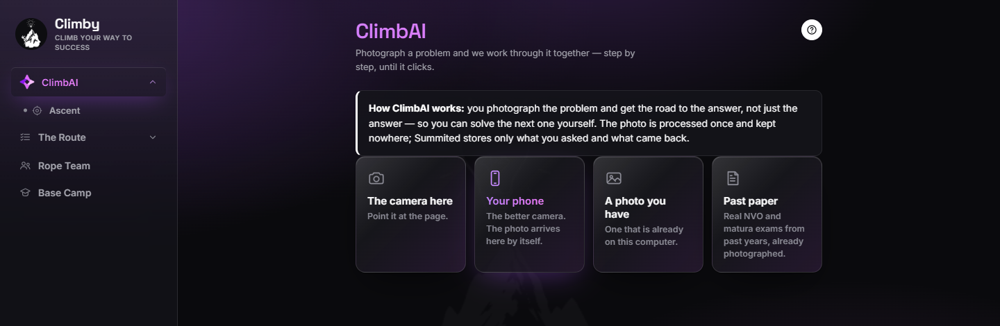

It teaches the way a good tutor does
Every other homework app is sold on getting the answer. Climby is built on the opposite idea: a student who is handed the answer learns nothing, and a student who is shown the next step learns how to find the rest.
So by default ClimbAI gives a hint and asks you to try. It shows the full solution only when you ask for it. That default can be changed in Settings — but it's the default, on purpose.
- The camera on the laptop — point it at the page, straighten the photo, ask.
- Your phone — link it once with a QR code, and every photo you take on it appears on the computer by itself.
- Past exam papers — every national exam paper (НВО, матура) from past years, ready to open and ask about.

What we promise the people who install it
- Photos are not kept. A photo is processed once to read the problem and then discarded. History keeps the text of the question and the answer — nothing else.
- Parents and teachers see numbers, never questions. How many tasks, how many minutes, how many days in a row. Never what a problem said or what was asked. A student who knows every question is read stops asking honestly.
- The study timer never sends a picture anywhere. "Is someone at the desk" is decided on the device. No frame leaves it. And the camera is off unless the student turns it on.
The full privacy policy, in plain words.
Installing, and the blue screen you'll see
Climby is made by one person and isn't yet in the Microsoft Store, so Windows shows a warning the first time you run it. It isn't a virus; it's Windows saying it hasn't seen this app before. Two clicks get past it.
- Download Climby-Setup above and open it.
- On the blue screen, click More info, then Run anyway.
For teachers and parents
A teacher creates a class and gives students a code. From then on the teacher sees, for the whole class, how many tasks were finished and how much time was spent — the same numbers a parent sees for one child, and nothing more.
Climby is free and its source is public. Questions, a bug, a school that wants to try it: martin.hr.original11@gmail.com.